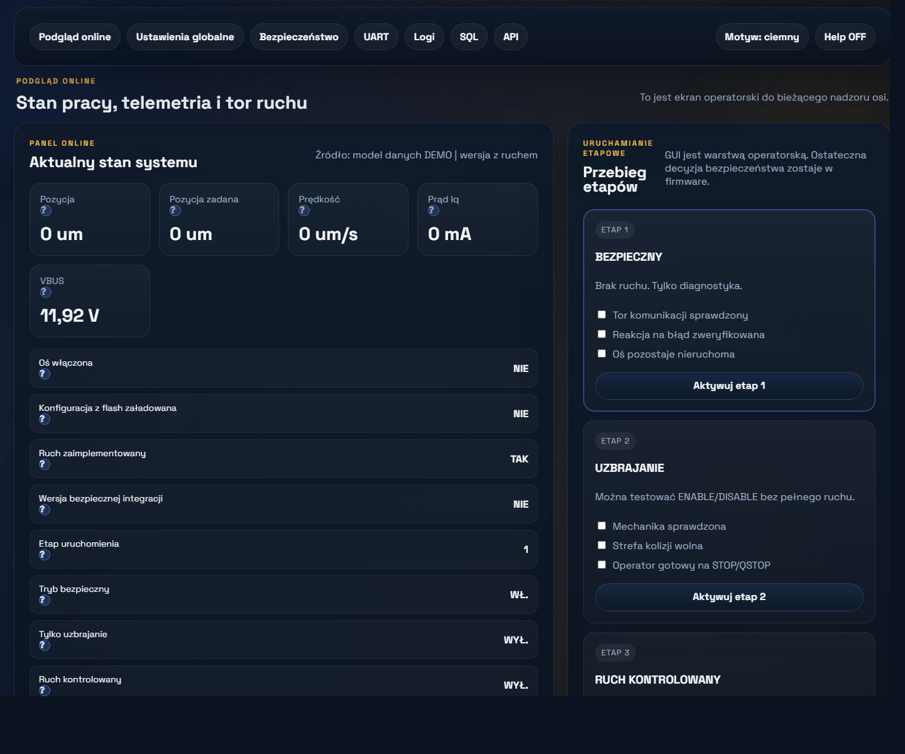
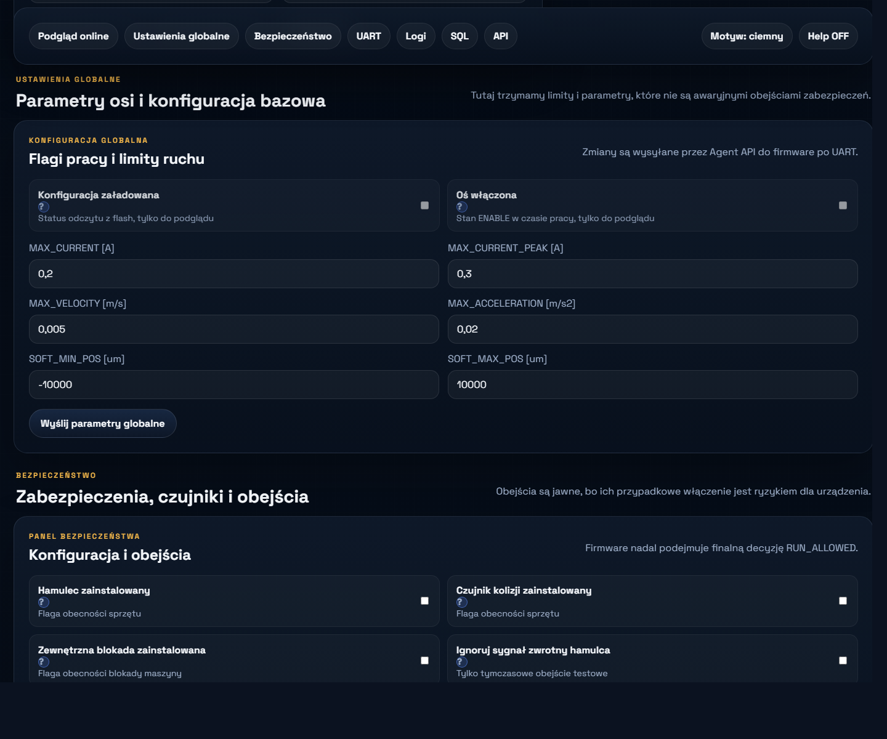
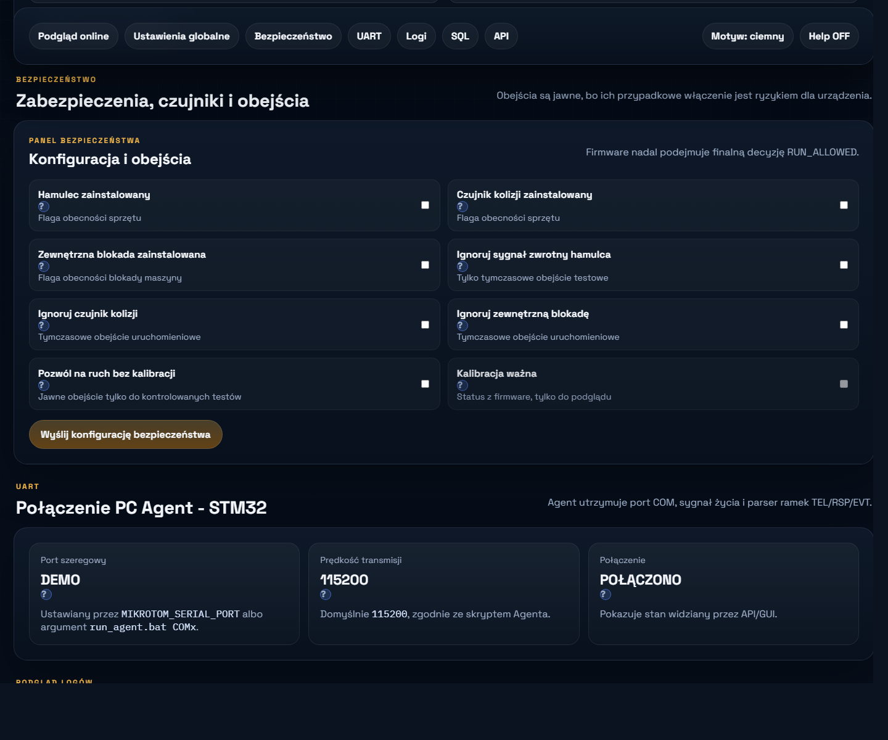
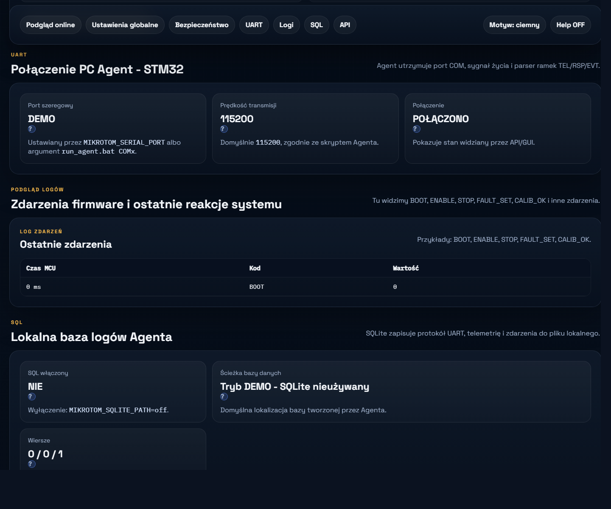
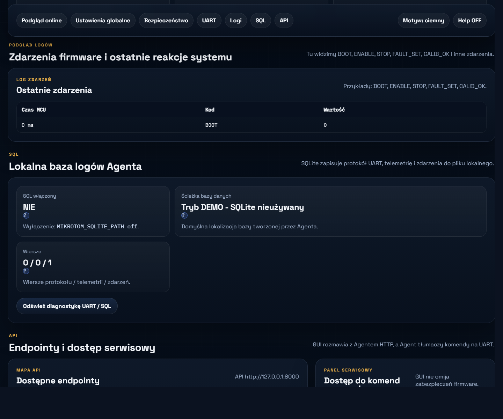
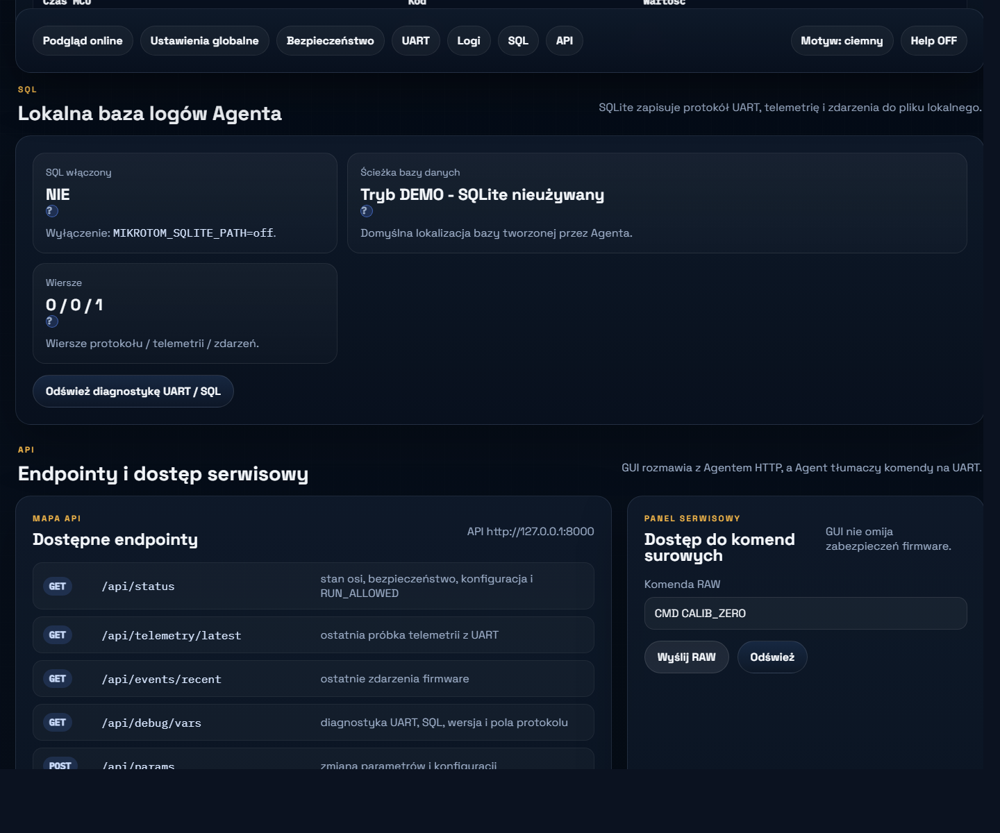
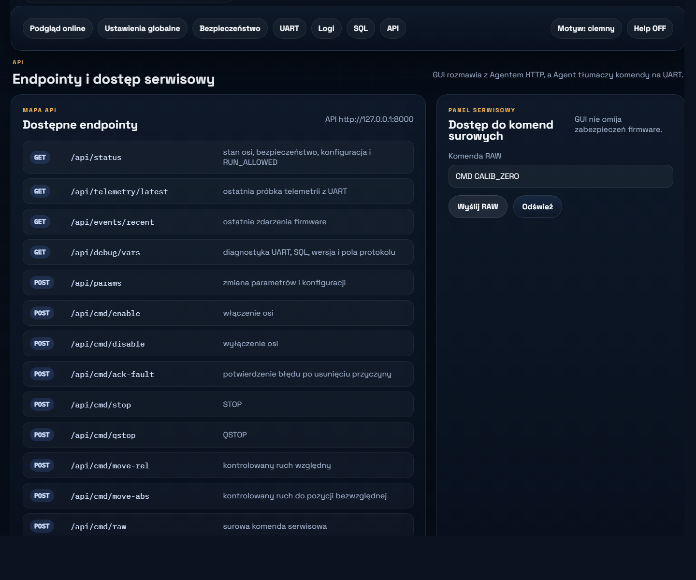

Przewodnik dla drugiego komputera: po co powstał nowy system, jak ma się do starego softu, co wdrażamy teraz, jak wykonać commissioning etapowy i jak uruchomić cały pakiet od zera.
SAFE INTEGRATIONGUI + Agent + UART + SQLRuch jeszcze zablokowany
Pierwotny software sterownika realizował głównie warstwę napędową: pomiary, FOC, PID, trajektorię i sterowanie sprzętowe. To wystarczało, aby urządzenie działało, ale nie dawało jeszcze pełnego systemu operatorskiego i uruchomieniowego.
Nowy system powstał po to, aby zachować działający fundament sprzętowy i dołożyć nad nim warstwę bezpieczeństwa, diagnostyki, API, GUI i przygotowania do HMI.
Najważniejsza zasada
Nie przepisujemy działającego toru sprzętowego od zera. Obudowujemy go warstwą systemową, która pilnuje kiedy i na jakich warunkach wolno dopuścić ruch.
2. Stary soft a nowy system
Co zostawiamy
niskopoziomowy tor sprzętowy,
sprawdzone elementy pomiarowe,
PWM, ADC, OPAMP, TIM,
strukturę projektu STM32,
elementy sterowania, które już działają na urządzeniu.
stary soft = glownie sterowanie napedem
nowy soft = sterowanie napedem + safety + commissioning + GUI + API + logi
3. Co wdrażamy teraz, a co później
Wdrażamy teraz
Agent lokalny,
GUI operatorskie,
API HTTP,
UART do MCU,
SQL / SQLite po stronie Agenta,
event log,
commissioning etapowy,
safe integration start bez ruchu.
Dojdzie później
build motion-enabled,
pełniejsze sterowanie ruchem z nowej architektury,
szersza telemetria,
pełniejsze HMI,
bardziej dojrzały zapis konfiguracji.
Ważne
Aktualny pakiet jest buildem SAFE INTEGRATION. Jego zadaniem jest potwierdzenie komunikacji, diagnostyki, safety i workflow commissioning. Brak ruchu po uruchomieniu jest poprawnym wynikiem.
4. Architektura systemu
GUI / HMI
->
Agent PC / API / SQL
->
UART
->
STM32 firmware
->
warstwa sterowania osi
->
hardware
GUI nie steruje hardware bezpośrednio. HMI także nie powinno omijać Agenta. Ostateczna decyzja o ruchu należy do firmware STM32.
5. Commissioning etapowy
Przebieg etapów jest po to, żeby nie przechodzić od razu do ruchu. Najpierw sprawdzamy komunikację, potem logikę, a dopiero na końcu przygotowujemy warunki pod ruch kontrolowany.
Etap 1 - komunikacja i diagnostyka
podłącz USB-UART,
zasil logikę,
tor mocy trzymaj wyłączony albo ograniczony,
uruchom Agenta i GUI,
sprawdź Połączenie, FAULT, RUN_ALLOWED, VBUS, UART, Logi i SQL,
potwierdź brak samoczynnego ruchu.
Etap 2 - uzbrajanie i test logiki
mechanika nadal musi być bezpieczna,
operator ma być gotowy do STOP / QSTOP,
testuj ENABLE, DISABLE, STOP, QSTOP,
obserwuj reakcję GUI, logów i firmware,
w aktualnym buildzie nadal nie oczekuj realnego ruchu.
Etap 3 - przygotowanie pod ruch kontrolowany
w docelowej wersji to etap przed ruchem,
w aktualnym pakiecie służy tylko do walidacji workflow i logiki commissioning,
nie traktuj go jako zgody na produkcyjny test ruchu.
Jak używać checklist
Checkboxy nie zastępują fizycznej kontroli urządzenia. Najpierw wykonujesz realną kontrolę, potem dopiero zaznaczasz checklistę i aktywujesz etap.
6. Instalacja i pierwsze uruchomienie
Uruchom skrypt sprawdzający wymagania.
Jeśli trzeba - doinstaluj Python i STM32CubeProgrammer.
Oczekiwany wynik po starcie
GUI i Agent mają działać, ale RUN_ALLOWED ma pozostać zablokowane. Oś nie powinna wykonać samoczynnego ruchu.
7. Jak używać GUI
Podgląd online

Główny ekran: status systemu, KPI, statusy safety i commissioning etapowy.
Ustawienia globalne

Tu ustawiasz podstawowe limity osi: prąd, prędkość, przyspieszenie i zakres pozycji.
Bezpieczeństwo

Oddzielna sekcja dla czujników safety i jawnych override.
UART

Diagnostyka połączenia Agent - STM32 przez UART.
Logi

Historia zdarzeń firmware przydatna do diagnozy kolejności działań.
SQL

Lokalne logowanie do SQLite po stronie Agenta.
API

Mapa endpointów HTTP i panel komend RAW.
8. Jak korzystać z paczki wdrożeniowej
W katalogu paczki znajdziesz numerowane pliki `.bat`, aby laik mógł iść po kolei bez znajomości repozytorium.
00_START_TUTAJ.bat - otwiera przewodnik,
01_SPRAWDZ_WYMAGANIA*.bat - sprawdza narzędzia,
02_INSTALUJ_PC.bat - instaluje część PC,
03_WGRAJ_MCU_STLINK.bat - wgrywa firmware,
04_USTAW_GUI_LIVE.bat - przełącza GUI na LIVE,
05_URUCHOM_AGENT.bat - pyta o COM i uruchamia Agenta,
06_URUCHOM_GUI.bat - uruchamia GUI,
07_OTWORZ_DOKUMENTACJE.bat - otwiera dokumenty.
Dla laika
Najpierw uruchom 00_START_TUTAJ.bat, potem wykonuj skrypty po kolei. Nie zaczynaj od GUI, jeśli firmware nie został jeszcze wgrany i Agent nie ma ustawionego poprawnego COM portu.